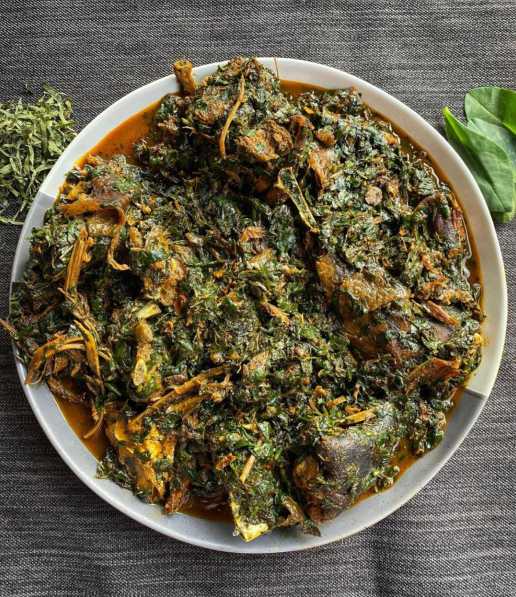

AFANG SOUP

Afang soup, eaten by Efik and Ibibio people of Nigeria is a delicious stew
made with Afang leaves and a leafy vegetable called waterleaf or malabar spinach.
The ingredients used to prepare Afang soup include beef, fish, palm oil, crayfish, pepper, Shaki (cow tripe), waterleaf, okazi leaf,
onion, periwinkle salt and some other seasonings.
INGREDIENTS
- 400g sliced Okazi/Afang leaves | about 4 handfuls
- 250g Water leaves
- 20 to 25 cl red palm oil (about 1 drink glass)
- Beef, Kanda and Dry fish
- 2 tablespoons ground crayfish
- Pepper and salt (to taste)
- 2 stock cubes
Notes on the ingredients
- Great alternative to water leaves is Lamb's Lettuce, known as Canonigos in Spanish.
- Yes, you need that much palm oil. 🙂
PREPARATION
- Wash, drain and slice the water leaves into tiny pieces.
- Grind or pound the sliced Okazi leaves.
- You can also grind it with your blender with a small quantity of water.
- Grind your pepper and crayfish and cut the onions into tiny pieces.
- Boil the beef and Kanda with the diced onions and stock cubes in a very small quantity of water.
- When done, add the dry fish and cook for about 5 more minutes.
- Now add the palm oil, crayfish and pepper.
- Once it starts boiling, add the afang (okazi) leaves, water leaves and periwinkle.
- When the okazi leaves have softened and the water has dried up a bit, add salt to taste and leave to simmer for about 5 minutes.
Your Afang soup is ready to be served! you can serve with fufu, garri, semo or pounded yam.
Back to index